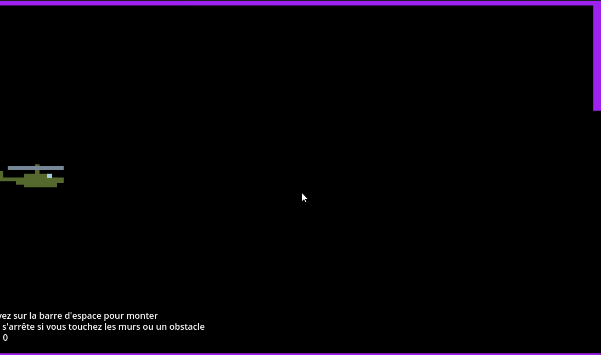
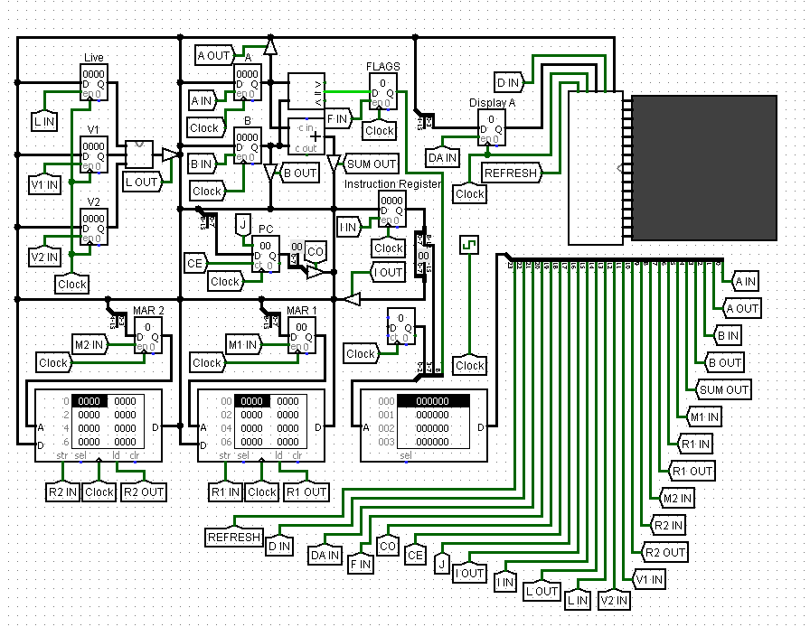

Mes projets
Une bonne introduction à mes différents projets serait ce site en lui meme réalisé en HTML et CSS qui m'a permi de solidifier mes bases en developpement web. En dehors de ca j'ai différents autres projets comme une marque de vetements ou d'autres sites et jeux videos mais je ne vais pas m'attarder dans l'immédiat dessus car ils sont encore en developpement.
Je vise à court terme a principalement étendre mon champs de compétence avec des projets "minimes" pour mener a bien ces objectifs qui me tiennent a coeur et qui seront a terme s'ils se concretisent retrouvables sur cette page.
Jeux sur godot
J'ai réalisé plusieurs jeux sur godot de manières différentes comme un pong uniquement en GDscript ou un platformer (voir image ci dessous) un peu plus complexe comprenant des obstacles, des ennemis, des animations, chekpoint et en soit tout ce qui fait la base d'un jeux du style. Ce jeu m'a permi d'apprendre et de me familiariser avec toutes les bases du logiciel et des outils qu'il propose mais au dela de ca il m'a surtout fait decouvir le developpement de jeux vidéos.

J'ai un deuxième jeu notable sur godot qui reprend le jeu copter réalisé uniquement en GDscript cette fois donc uniquement en code ce qui explique son aspect rudimentaire mais c'est malgré tout un projet qui m'a aussi grandement appris et des enseignements reutilisables sur d'autres projets qui ne concernent pas forcément le jeu video.
Reproduction d'un Ordinateur Turing
J'ai également reproduit un ordinateur de turing a l'aide de l'outil logisim grace auquel j'ai explorer des concepts fondamentaux de l'informartique et de l'architecture des ordinateurs (portes logiques, transistor, algèbres booléenne ...). J'ai d'ailleurs pu simuler le "jeu de la vie" au travers de l'ordinateur que vous trouverez juste en dessous.
